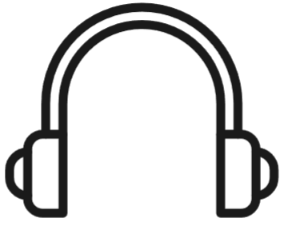
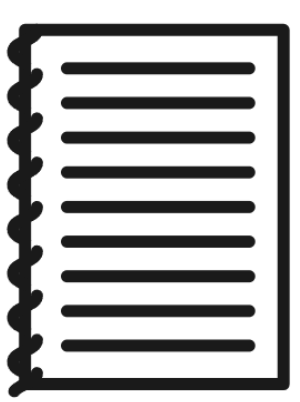
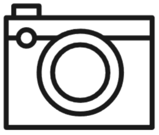

Hobbie - João Vitor Gaioski

Meu principal hobbie é edição de video. Eu imagino que seja um pouco anormal, afinal,
editar videos não é exatamente um hobbie comum de se ver por ai mas eu gosto e pratico isso
a pelo menos 6 anos.
Eu fiz vídeos variados:
- Jogos aleatórios
- Tutoriais
- Dos meus amigos
- etc...

Geralmente criamos um video pensando nos passos:
- Ideia
- Análise da possibilidade
- Preparo / Roteiro
- Gravação
- Edição
- Publicação / Endereçamento
Algumas especificações
Roteiro
Momento criativo inicial.

Gravação
Hora de incorporar o verdadeiro ator e se soltar.

Edição
Momento criativo final. Aqui você pode brincar um pouco com várias possibilidades.